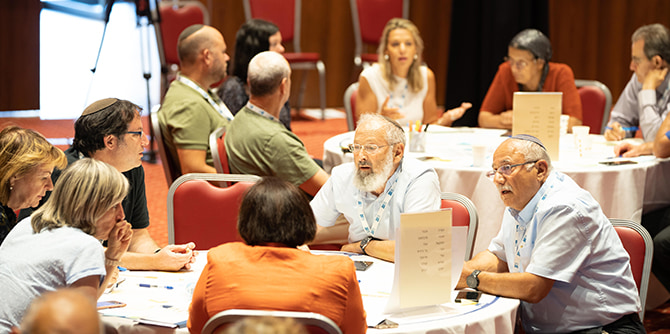
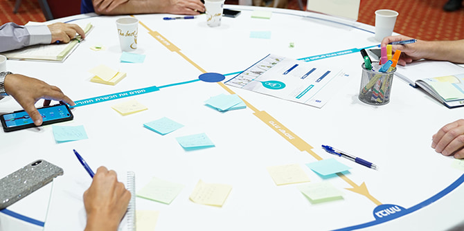
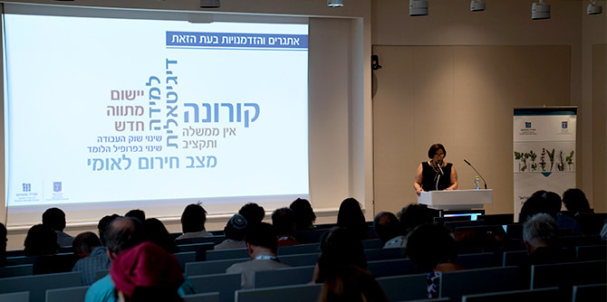

The Summit for Executive Leadership of Teacher Education in Israel: Humanity, Society, and Knowledge in the Current Age – the first conference of its kind – brought together the senior leaders of all the academic institutions responsible for teacher education in Israel. Part of the strategic collaboration between the Mandel Leadership Institute and the Ministry of Education, the summit was attended by the presidents and rectors of the 21 colleges of education in Israel, as well as the heads of schools of education and of teacher training programs at the country’s nine research universities. This was the first time that representatives of all these institutions – universities and colleges large and small, in the center of the country and the outlying regions, secular, religious, Jewish and Arab – came together to discuss contemporary challenges and explore the deep connections between education and society.
These academic leaders were joined by senior representatives of the Ministry of Education and members of staff from various programs of the Mandel Foundation–Israel. Spanning three days, the summit was held at the Mandel Foundation building in Jerusalem and at Kibbutz Kfar Blum.
 Photo: Yariv Weinberg, Simanim
The added value that the Mandel Foundation–Israel brings to an event of this nature is its longstanding and in-depth engagement with the major questions that are of concern to Israeli society. The summit focused on the role of teacher education in advancing social cohesion and resilience in Israel. The choice of topic was based on the understanding that the teachers and preschool teachers of the future have a key role to play in addressing the processes of social polarization that have been accelerating against the backdrop of tectonic changes in Israeli democracy. This complex, overarching theme was explored via three axes of investigation: humanity, society, and knowledge. These are vital arenas on which education has critical influence.
The humanity axis examined the challenge posed by the decline in the status of the humanities in academia and the erosion of the place of humanist ideas in the academic education of teachers in Israel. In this realm, the participants watched a conversation between
Professor Martha Nussbaum of the University of Chicago and
Professor Yuli Tamir of Beit Berl College. Professor Nussbaum argued that education should nurture three key human attributes: the Socratic method of thinking, historical consciousness, and the use of imagination. Following this discussion, the participants visited Natur, a mixed religious-secular pre-military leadership academy in the Golan Heights, where they met with young people who are engaged in full-time study of philosophical and Jewish texts.
 Photo: Yariv Weinberg, Simanim
The society axis examined the challenge posed by the deep social gaps in Israel and the segregation between educational streams. A panel discussion was held with
Rafik Halabi, the head of the Daliyat al-Karmel local council,
Professor Gad Yair of the Hebrew University of Jerusalem,
Professor Zipora Libman, president of the Kibbutzim College of Education, and
Professor Yehezkel Taler, president of the Gordon College of Education. The panelists spoke about the role of education and academia in fostering social mobility and healing social rifts. The summit participants were then invited to participate in tours led by individuals who grew up in Israel’s northern periphery and now work to advance social causes in the region.
The knowledge axis explored changes related to knowledge in the digital age and the difficulty of distinguishing fact from fiction (“fake news”).
Professor Karine Nahon, head of the Data, Government and Democracy program at IDC Herzliya and president of the Israel Internet Association spoke about these topics with
Professor Danah Boyd of the University of New York, who is the founder of Data & Society, a New-York based research institute. The two professors discussed efforts to address the rising extremism that characterizes rhetoric on social media and to strengthen social infrastructures and human networks at a local level, as a way of increasing trust. To experience the subject first-hand, the participants investigated the competing narratives regarding the production of sustainable energy in the Golan Heights, toured the actual sites at the heart of the controversy, and had a virtual tour of the influence groups involved.
 Photo: Yariv Weinberg, Simanim
In addition to the aforementioned elements of the program, participants took part in workshops and meetings with school principals and teachers, with fellows of the Mandel Program for Academic Leadership in Teacher Education, with Mandel faculty members, and with experts in the fields of management and leadership. Workshop topics included horizontal leadership, swarm leadership, design leadership, and storytelling. Participants also worked on translating the insights gained from the summit into concrete organizational actions for their own institutions and on connecting these actions to the new policy directions of the Ministry of Education and the Council for Higher Education (CHE), which approved new guidelines for academic education for teachers and preschool teachers in February 2021. Representatives of the universities and colleges themselves were involved in planning the summit, and their ideas and responses were incorporated throughout the plenum sessions.
The summit received widespread positive feedback: A large majority of the participants said that addressing big questions has great relevance for their work and reported that they gained a great deal from the diverse pedagogies used at the summit. Many participants requested continuing contact and expressed a desire for future meetings in similar forums.
In the wake of the summit, there was a significant rise in interest in applying to the second cohort of the Mandel Program for Academic Leadership in Teacher Education which will be begin in January 2022. In addition, the heads of teacher education institutions promised support for initiatives that will be developed by Mandel fellows from the new cohort. The summit further strengthened the longstanding relationship between the Mandel Foundation and the Ministry of Education, and forged important new relationships between the Foundation and academic institutions for teacher education in Israel.
{kind=link}
{kind=link}
{kind=link}